![Official portrait of Tidus in Dissidia 012 [duodecim]](../assets/portraits/tidus.png)
Final Fantasy X
Tidus
Aerial poking, dodge counters and a Caladbolg finish
Standing in the meta
Tier B 18th of 30 — 2017 tournament tier list from dissidia.wiki (half matchup values, half expert player votes).
Tidus is ranked 18th (tier B) on the 2017 tier list. The wiki's overview extract does not comment on that placement; it mainly praises his EX Mode's ability to close out matches.
Overview
The available overview extract focuses on Tidus's EX Mode, presented as support for his long-term gameplan, with good bonuses attached. The centrepiece, Caladbolg (ATK), raises his base bravery damage up to x2 when Tidus is at full health — on every attack that deals bravery damage, EX Burst included: an excellent tool for closing out a match with a good lead.
His EX Burst is conversely one of the weakest in the game when Tidus is at low health; but since EX Mode adds critical rate and drains the opponent's assist gauge on activation, it remains a good way to secure a win.
Strengths
- Hop Step, his reference poke at 11F: the fastest in his kit, active all around him, with a low recovery, 90 EX on hit and reliable assist conversions.
- Three dodge attacks (Stick & Move, Dart & Weave, Cut & Run) with 20 frames of invincibility on startup, which serve as defensive counters and lead into the Quick Hit HP link.
- Excellent mobility: a fast run, multiple aerial jumps, a fast fall after an air dodge, and a Reverse Ground Dash to defend while building assist gauge.
- Very strong synergy with the Aerith assist: combos without a wall, favourable clashes and follow-ups after most of his pokes and HP attacks.
- Greatly increased vertical tracking during assist calls on Sonic Buster, Full Slide, Slice & Dice and Stick & Move, which extends his punishes at mid range.
- The Caladbolg EX Mode: doubled base damage at full health, increased criticals and the opponent's assist gauge drained on activation — a genuine end-of-match tool.
- Jecht Shot avoids the stagger against LV2 Assist Change and offers big Wall Rush potential, including at the ceiling.
Weaknesses
- His solo combos rest on dodge cancels with tight timing, hard to land consistently.
- His dodge attacks have 51-53F startups: they lose to moves with fast recoveries and remain vulnerable to blocks and assist punishes.
- Safety on hit against Assist Changes is a recurring weak point (Spiral Cut, Quick Hit, Jecht Shot and Energy Rain are all exposed to it).
- Wither Shot and Spiral Cut are judged best avoided: disproportionate risk, low threat or low reward.
- His EX Burst is one of the weakest in the game when he is at low health, owing to Caladbolg's scaling.
Stats & speeds
| Name | Tidus (ティーダ） |
|---|---|
| Original game | Final Fantasy X |
| Base ATK (LV100) | 110 (Average) |
| Base DEF (LV100) | 111 (Average) |
| Run Speed | 4 (Normal, Fast),1.5 (EX Mode, Very Fast) |
| Dash Speed | 73 (Normal, Fast)65 (EX Mode, Fastest) |
| Fall Speed | 73 (Above Average)65 (EX Mode, Fastest) |
| Fall Speed Ratio After Dodge | 20 (Normal, Very Fast), 14 (EX Mode, Very Fast) |
| Fastest BRV | 11F (Hop Step) |
| Fastest HP | 39F (Spiral Cut) |
| 1-Hit HP | No |
| HP Links | Yes |
| Command Block | No |
| Weapon | Daggers Grappling Weapons Swords Thrown Weapons |
| Armor | Bangles Chestplates Clothing Hats Headbands Helms Light Armor Shields |
| Exclusive weapons | Official Ball, Striker, Grand Slam,World Champion |
| Alignment | Chaos (012),Cosmos (013) |
| Voice Actor (JP) | Masakazu Morita |
| Voice Actor (ENG) | James Arnold Taylor |
Gold dot: this character · small dots: the rest of the cast · violet line: average. Wiki values, lower = faster; the rank on the right reads directly (1st = fastest).
Moves
Shorter bar = faster move. Startup in frames (60 fps, dissidia.wiki data), with priority after the value. Moves marked ★ are the fastest in the kit — usually your best punish and pressure tools.
Bravery attacks
Ground
Hop Step (ground) Melee Low
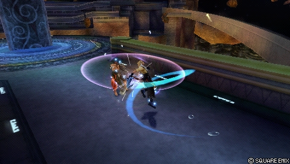
A quick sword strike followed by a kick that pushes both fighters apart: Tidus's key poke, the fastest in his kit (11F), with a low recovery and 90 EX on hit. The second hit confirms with a lax window into a Chase, and the first hit combos into assists (Aerith above all). The initial rotation covers Tidus's surroundings, which makes him hard to whiff punish without a clash; the ground version leaves Tidus airborne and the opponent standing on the ground, an important detail for conversions with the Kuja and Jecht assists.
| Base damage | 7, 13 (20) |
|---|---|
| Startup | 11F |
| Type | Physical |
| Priority | Melee Low |
| EX Force | 90 |
| Effects | Chase |
| Cancels | Dodge, Attack (1st hit), Block (1st hit) |
| CP (mastered) | 30 (15) |
Sonic Buster Melee Low
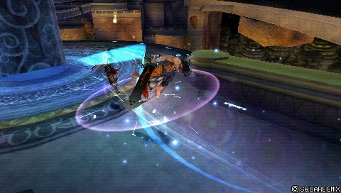
A pass-through tackle at 25F, tied with Full Slide for the highest base damage of his bravery attacks (40), a good short-range post-block punisher and an assist combo starter thanks to its confirmable follow-ups. The number of hits decreases with distance (at its maximum at point-blank range). A reactable startup with a distinct sound cue — shared, however, with Tidus's block animation, which good players mask with spot dashes. Its vertical tracking, average by default, increases enormously during an assist call.
| Base damage | 2 x 5, 6, 8, 16 (40) |
|---|---|
| Startup | 25F |
| Type | Physical |
| Priority | Melee Low |
| EX Force | 27 |
| Effects | Wall Rush |
| Cancels | Dodge |
| CP (mastered) | 30 (15) |
Sphere Shot Ranged Mid
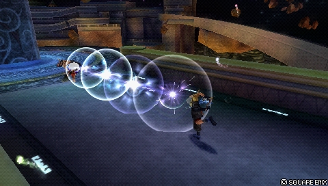
A stationary blitzball throw in Ranged Mid: too slow (41F) for frequent zoning, but its animation generally escapes punishes from the Kuja and Aerith assists, it holds its own against non high-speed HP attacks as a counterpoke and disrupts The Emperor in his traps. An opponent's block suffers a stagger: with his back to the wall, Tidus can guarantee a Hop Step after a dodge cancel, and assists other than Aerith convert the stagger into a combo. Up to 8 hits for 32 damage at point-blank range, far less at maximum range.
| Base damage | 4 x 8 (32) |
|---|---|
| Startup | 41F |
| Type | Physical |
| Priority | Ranged Mid |
| EX Force | 0 |
| Effects | Wall Rush |
| Cancels | Dodge |
| CP (mastered) | 30 (15) |
Stick & Move (ground) Melee Low
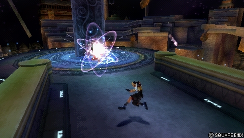
A dodge attack (20F of invincibility on startup) with controllable lateral movement, which throws a disjointed sword forwards: as much EX as Hop Step on hit, enough hit stun for assist combos and the Quick Hit HP link. A matchup weapon: going around the opponent punishes the many attacks that strike in a straight line, and the sword passes through walls and scenery because it is not a true projectile. Long startup and long recovery: vulnerable to blocks and assist punishes; the sword still connects on the way back, which allows a dodge cancel > Hop Step solo.
| Base damage | 2 x 6, 10 (22) |
|---|---|
| Startup | 53F |
| Type | Physical |
| Priority | Melee Low |
| EX Force | ~90 |
| Effects | Chase, Dodge |
| Cancels | Dodge |
| CP (mastered) | 30 (15) |
Dart & Weave (ground) Melee Low
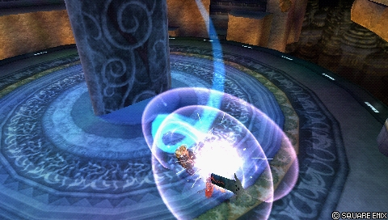
A dodge attack (20F of invincibility) that leaps over the opponent then spirals downwards: the fastest of his dodge attacks that always moves towards the target, able to cross up against a block (or even to double cross up with precise spacing). On hit: a dodge cancel into Hop Step for 165 EX and assist gauge, Aerith combos through a Chase, Jecht after an early dodge cancel, and the Quick Hit HP link. It loses to moves with fast recoveries, is risky against a simultaneous block (51F of startup against 52F of block), is unaffected by assist tracking and is the most vulnerable of his dodge attacks on whiff.
| Base damage | 1 x 6, 14 (20) |
|---|---|
| Startup | 51F |
| Type | Physical |
| Priority | Melee Low |
| EX Force | 75 |
| Effects | Chase, Dodge |
| Cancels | Dodge |
| CP (mastered) | 30 (15) |
Cut & Run (ground) Melee Low
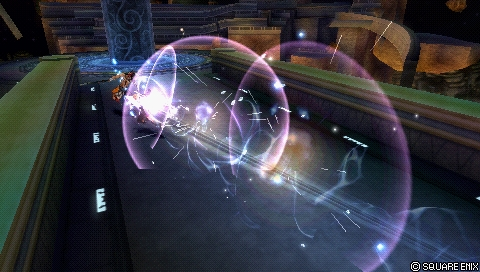
A dodge attack (20F of invincibility): a fast retreat then a multi-hit charge. The best base damage and the shortest whiff recovery of his dodge attacks; the backward dodge avoids many moves with slight forward tracking. On hit: the Quick Hit HP link, or a difficult dodge cancel > Hop Step for more damage and gauge. It is only active after the retreat, so it is slower in practice and more vulnerable to blocks; the charge passes through certain projectiles with intermittent hitboxes, such as the Warrior of Light's Shining Wave HP attack.
| Base damage | 2 x 5, 14 (24) |
|---|---|
| Startup | 51F |
| Type | Physical |
| Priority | Melee Low |
| EX Force | ~90 |
| Effects | Chase, Dodge |
| Cancels | Dodge |
| CP (mastered) | 30 (15) |
Aerial
Hop Step (midair) Melee Low
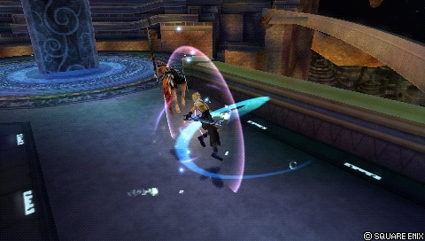
The key poke becomes even more central in the air: the same qualities as the ground version (generous active frames, a confirmable follow-up, 90 EX), but it floats standing opponents on hit. It builds assist gauge reliably, harasses and converts into Aerith, arguably his strongest assist. Delaying the second hit is one of his most common mixups; the low priority and small damage increase the risk against command blocks.
| Base damage | 7, 13 (20) |
|---|---|
| Startup | 11F |
| Type | Physical |
| Priority | Melee Low |
| EX Force | 90 |
| Effects | Chase |
| Cancels | Dodge, Block (1st hit), Attack (1st hit) |
| CP (mastered) | 30 (15) |
Full Slide Melee Low
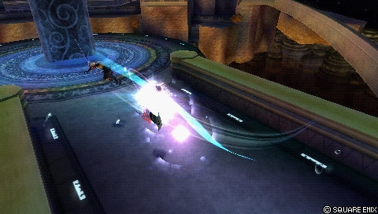
The aerial variant of Sonic Buster: a charge at 25F, two confirmable follow-ups, damage that varies with distance and Wall Rush potential, without the block sound cue. The vertical tracking strengthens during assist calls to pick up air dodges or to clash with Melee Low moves as a dodge punish; the hit stun allows assist combos even without a wall. A good secondary punish and mixup tool, and a defensive way of building gauge with lock-off.
| Base damage | 2 x 6, 5, 8, 15 (40) |
|---|---|
| Startup | 25F |
| Type | Physical |
| Priority | Melee Low |
| EX Force | 30 |
| Effects | Wall Rush |
| Cancels | Dodge |
| CP (mastered) | 30 (15) |
Wither Shot Ranged Low
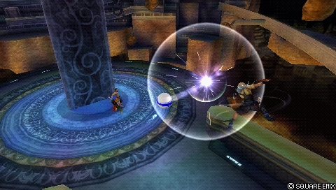
A blitzball throw in Ranged Low, the reverse of Sphere Shot: a single hit, better vertical tracking, no Wall Rush. A combo into the Kuja assist is possible on hit, but a slow startup, low damage, low EX and Tidus's immobility make this move hard to justify next to the dodge attacks.
| Base damage | 10 |
|---|---|
| Startup | 41F |
| Type | Physical |
| Priority | Ranged Low |
| EX Force | 3 |
| CP (mastered) | 30 (15) |
Stick & Move (midair) Melee Low
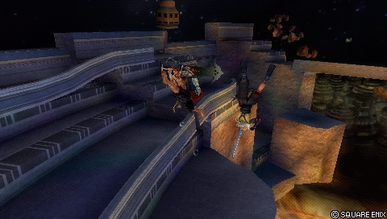
It works like the ground version, disjoint included, with the same abnormally high vertical tracking during assist calls — useful against Firion, who has decent reach against Cut & Run. A matchup move, but far from useless.
| Base damage | 2 x 6, 10 (22) |
|---|---|
| Startup | 53F |
| Type | Physical |
| Priority | Melee Low |
| EX Force | ~90 |
| Effects | Chase, Dodge |
| Cancels | Dodge |
| CP (mastered) | 30 (15) |
Dart & Weave (midair) Melee Low
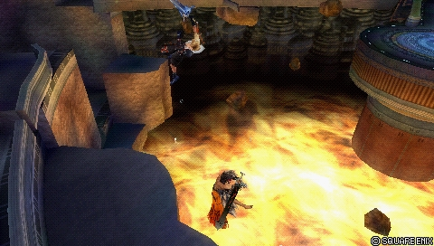
It works like the ground version: the combo into Hop Step and the cross-up against a block are both still possible. Beware the ceiling, which cuts the movement short and neutralises most of its defensive qualities — the initial invincibility is no longer enough if Tidus does not move.
| Base damage | 1 x 6, 14 (20) |
|---|---|
| Startup | 51F |
| Type | Physical |
| Priority | Melee Low |
| EX Force | 75 |
| Effects | Chase, Dodge |
| Cancels | Dodge |
| CP (mastered) | 50 |
Cut & Run (midair) Melee Low
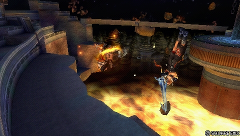
The aerial version with a reinforced last hit (34 base damage), notable for overall damage in EX Mode. The best average reward on hit among his dodge attacks: it allows him, in particular, to spend two assist bars in a single combo with Aerith to close things out — a big asset in many matchups.
| Base damage | 2 x 5, 24 (34) |
|---|---|
| Startup | 51F |
| Type | Physical |
| Priority | Melee Low |
| EX Force | ~90 |
| Effects | Chase, Dodge |
| Cancels | Dodge |
| CP (mastered) | 30 (15) |
HP attacks
Ground
Spiral Cut Melee High, Block (Ranged Low)
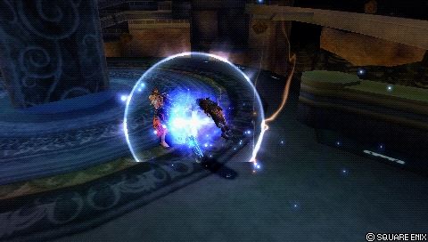
An advancing ground HP attack at 39F, whose animation runs to the end even on whiff: a modest reward (10 base, no Wall Rush) apart from its 90 EX, a poor anti-air, very vulnerable after an Assist Change and at a frame disadvantage against recovery attacks. Its Ranged Low block property activates instantly and covers him up to the first strike. Usable as an occasional surprise attack or at the end of an assist combo, but his other HP attacks often do better.
| Base damage | 1 x 4, 6 (10) |
|---|---|
| Startup | 39F |
| Type | Physical |
| Priority | Melee High, Block (Ranged Low) |
| EX Force | 90 |
| Effects | Magic Block |
| Cancels | Dodge |
| CP (mastered) | 30 (15) |
Energy Rain (ground) Melee High (kick), Ranged High (projectiles)
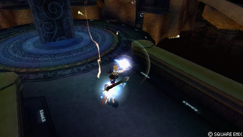
A descending kick followed by Ranged High projectiles with strong homing, long active frames and final explosions that go off even on a miss — very hard to avoid without increased invincibility, a late Assist Change, Precision Evasion or a high-priority block (Jecht Block). It leaves Tidus airborne, so Aerith combos work without a wall, with a good frame advantage; the Hop Step dodge cancel beats most Recovery Attacks. The ground version can serve as a risky counterpoke thanks to the initial ascent.
| Base damage | 4, 1 x 6 (10) |
|---|---|
| Startup | 53F |
| Type | Physical, Magical |
| Priority | Melee High (kick), Ranged High (projectiles) |
| EX Force | 90 |
| Cancels | Dodge |
| CP (mastered) | 30 (15) |
Aerial
Jecht Shot Ranged High
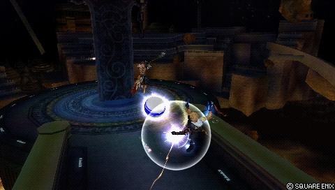
Three blitzball shots with very strong Wall Rush knockback: his most powerful HP attack in base damage, with the best safety on hit against LV2 Assist Change (Ranged priority, enough reach from a dodge's distance). The follow-up shots have extended range and tracking but lose to high-priority blocks — Jecht's speciality after escaping. Too slow (61F) to punish simultaneous blocks and dodges, assist-punishable on reaction, and Tidus stays still on the first two shots. Excellent for securing ceiling Wall Rushes and contesting EX Cores; a 10 % chance of getting a Moogle ball (a doubled multiplier if it comes out on the first shot).
| Base damage | 5 or 10 (moogle), 10 (15 / 20) |
|---|---|
| Startup | 61F |
| Type | Physical |
| Priority | Ranged High |
| EX Force | 30 |
| Effects | Wall Rush |
| Cancels | Dodge |
| CP (mastered) | 30 (15) |
Energy Rain (midair) Melee High (kick), Ranged High (projectiles)
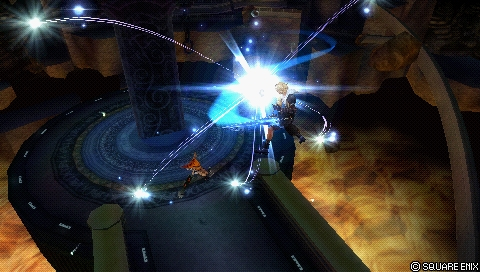
Almost identical to the ground version: the same damage, the same EX, and Tidus stays airborne while firing the homing projectiles. Not his strongest HP attack, and it shares with Jecht Shot the weakness of losing to Jecht's high-priority block after an Assist Change.
| Base damage | 4, 1 x 6 (10) |
|---|---|
| Startup | 53F |
| Type | Physical, Magical |
| Priority | Melee High (kick), Ranged High (projectiles) |
| EX Force | 90 |
| Cancels | Dodge |
| CP (mastered) | 30 (15) |
Slice & Dice Melee High
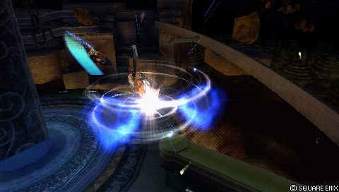
A gliding charge followed by strikes all around the target: more horizontal reach than Energy Rain, excellent post-hit tracking and a strong chance of hitting the opponent's assist during their escape, which allows an early dodge cancel in case of a riposte. The first hit has good active frames and the vertical tracking explodes during assist calls: good for clashing favourably with high priorities and punishing interminable attacks; the glide also helps reflect high-priority projectiles. One of his best HP attacks, relevant in almost every matchup.
| Base damage | 2 x 5 (10) |
|---|---|
| Startup | 53F |
| Type | Physical |
| Priority | Melee High |
| EX Force | 90 |
| Cancels | Dodge |
| CP (mastered) | 30 (15) |
HP links (Bravery → HP)
HP attacks that fire as an extension of a specific Bravery attack — the “HP link”. They are equipped like any other HP attack.
All the versions of Quick Hit share the same data — one per evasive bravery attack of origin.
Quick Hit A Melee High
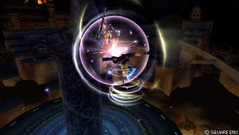
Tidus's only HP link, branching off all his dodge attacks: an aerial combo with a Wall Rush that comes out even without connecting, which exposes it to counters after an Assist Change. Used outside a combo, it does not consume an assist bar, which stays available to interrupt or trade with a punisher; the last hit has good active frames and can clash with hasty melee whiff punishes. With Aerith, the knockback can be cancelled at a precise moment to continue without a Wall Rush on large stages.
| Base damage | 1 x 4, 3 (+7) |
|---|---|
| Startup | ? |
| Type | Physical |
| Priority | Melee High |
| EX Force | 0 |
| Effects | Wall Rush |
| Cancels | Dodge |
| CP (mastered) | 30 (15) |
Quick Hit B Melee High
Quick Hit from Dart & Weave: identical to the other Quick Hits.
| Base damage | 1 x 4, 3 (+7) |
|---|---|
| Startup | ? |
| Type | Physical |
| Priority | Melee High |
| EX Force | 0 |
| Effects | Wall Rush |
| Cancels | Dodge |
| CP (mastered) | 30 (15) |
Quick Hit C Melee High
Quick Hit from Cut & Run: identical to the other Quick Hits.
| Base damage | 1 x 4, 3 (+7) |
|---|---|
| Startup | ? |
| Type | Physical |
| Priority | Melee High |
| EX Force | 0 |
| Effects | Wall Rush |
| Cancels | Dodge |
| CP (mastered) | 30 (15) |
Quick Hit D Melee High
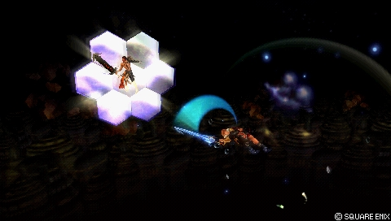
Quick Hit from aerial Stick & Move: identical to the other Quick Hits.
| Base damage | 1 x 4, 3 (+7) |
|---|---|
| Startup | ? |
| Type | Physical |
| Priority | Melee High |
| EX Force | 0 |
| Effects | Wall Rush |
| Cancels | Dodge |
| CP (mastered) | 30 (15) |
Quick Hit E Melee High
Quick Hit from aerial Dart & Weave: identical to the other Quick Hits.
| Base damage | 1 x 4, 3 (+7) |
|---|---|
| Startup | ? |
| Type | Physical |
| Priority | Melee High |
| EX Force | 0 |
| Effects | Wall Rush |
| Cancels | Dodge |
| CP (mastered) | 30 (15) |
Quick Hit F Melee High
Quick Hit from aerial Cut & Run: identical to the other Quick Hits.
| Base damage | 1 x 4, 3 (+7) |
|---|---|
| Startup | ? |
| Type | Physical |
| Priority | Melee High |
| EX Force | 0 |
| Effects | Wall Rush |
| Cancels | Dodge |
| CP (mastered) | 30 (15) |
EX Mode: Equipped Caladbolg! & EX Burst
Tidus's EX Mode, “Equipped Caladbolg!”, grants Regen, Critical Boost, Mirror Dash, Caladbolg (ATK) and Caladbolg (DODGE). It also speeds up his run, dash and fall speeds (with distinct EX Mode values in the infobox, including a dash ranked the fastest in the game).
According to the overview, this EX Mode supports his long-term gameplan: Caladbolg (ATK) raises his base bravery damage up to x2 at full health, on every attack that deals bravery damage, EX Burst included — ideal for closing out a match with a lead. Activating it also adds critical rate and drains the opponent's assist gauge, enough to secure a win even when the Burst itself is weakened.
EX Burst : The data includes no detailed entry on the EX Burst; the overview states that it is one of the weakest in the game when Tidus is at low health, owing to Caladbolg's scaling.
Gameplan & advanced tech
The heart of Tidus's game is aerial and compact: Hop Step as the central poke to harass, build assist gauge and punish (dodges, blocks, whiffs); Full Slide for aerial conversions with Aerith and as his main punisher after a successful blodge; Slice & Dice as his safest HP attack against LV1 Assist Change and a clash/punish tool at mid range; Jecht Shot as an assist combo finisher with a big Wall Rush that avoids the LV2 Assist Change stagger. That core is completed by the dodge attacks and the ground moves depending on the matchup.
The dodge attacks are his defensive card: 20 frames of invincibility on startup, counters that lead into Quick Hit (his only HP link) or into a dodge cancel > Hop Step for EX and gauge. The wiki recommends choosing the dodge attack according to the opponent: Stick & Move against Firion, Laguna, Terra, Ultimecia and The Emperor; Dart & Weave against Sephiroth; Cut & Run against the rest of the roster. His solo combos all revolve around these moves (for instance Dart & Weave > dodge cancel > Hop Step, 53-54 base damage and 165 EX), but they are hard to land consistently.
Aerith is the pivot of his offensive plan: Seal Evil, at Ranged priority, starts a combo even when the opponent is holding two assist bars, and since most of Tidus's moves leave him airborne, almost his whole kit can be extended or covered by her (Full Slide conversions, post-HP follow-ups, cancelling Quick Hit's knockback, punishes extended by assist tracking). Kuja, Jecht and Onion Knight offer documented alternatives with their own routes. On defence, the Reverse Ground Dash lets him back off while generating gauge, and Sphere Shot or Sonic Buster serve as mid-range mixups to contest blocks and slow pokes.
Finally, EX Mode serves as his end-of-match plan: at full health, Caladbolg doubles his base bravery damage, and activating it drains the opponent's assist gauge while adding criticals — enough to turn a lead into a win.
Character-specific tech
Dodge cancel Hop Step
A documented solo combo: Dart & Weave > dodge cancel (up, down) > Hop Step, for 53-54 base damage and 165 EX. The timing is unforgiving and the arc of the dodge cancel depends on the camera angle; the same principle applies to the other dodge attacks.
Assist call tracking
The vertical tracking of Sonic Buster, Full Slide, Slice & Dice and Stick & Move increases greatly during an assist call, which makes them mid-range whiff punishers against moves with long recoveries.
▶ Dissidia 012 - Tidus' Tracking During Assist — Dissidia Mediawiki
Stick & Move disjoint
The thrown sword does not count as a separate projectile: it can poke through walls and scenery, and it still connects on the way back, which leaves time to dodge cancel and combo into Hop Step.
▶ Dissidia 012 - Tidus Stick & Move Disjoint — Dissidia Mediawiki
Sphere Shot stagger > Hop Step
An opponent's block on Sphere Shot causes a stagger; with his back to the wall, Tidus gets enough frame advantage to guarantee a Hop Step after a dodge cancel. Assists other than Aerith also convert the stagger into a combo.
▶ Dissidia 012 - Tidus Sphere Shot block stagger into Hop Step — Dissidia Mediawiki
Quick Hit knockback cancel (Aerith)
With Aerith, Quick Hit's knockback can be cancelled at a precise moment to continue the combo without a Wall Rush — a valuable alternative on large stages with no wall nearby.
Sound cue masking
Sonic Buster's sound cue is the same as Tidus's block cue: spot dashes let him mask it and trap opponents who play by ear.
Documented solo combo routes
The record concludes that Tidus does not really have a solo combo — insufficient hit stun on his HP attacks, almost no landing lag in his kit — and that his strength is building big combos with an assist. Leads listed: Wither Shot > dodge cancel > Hop Step or Full Slide; at a wall, Cut & Run > dodge cancel > Hop Step (untested); Stick & Move (last hit at point-blank range) > DC > Hop Step (untested); the compiler confirms ground Dart & Weave > DC > aerial Hop Step, the route already documented by the wiki.
Sources: pastebin.com/8FWDXjvJ
Documented combos (original notation, dissidia.wiki)
Main article: Tidus Combos (Solo)
Tidus' solo combos all revolve around his dodge attacks and dodge cancelling it into Hop Step. They're good for getting EX and starting assist combos, but the dodge attacks often work better as a defensive counterattack. As such, landing them in an online match can be difficult.
Universal techniques (blodge, dash feint, lock off, dodge punishment): see the Techniques & glitches page.
Matchups
The period matchup thread on dissidiaforums (recovered through the Wayback Machine) sets the frame, and axeeeeL's diagnosis became the consensus there: Tidus has no clearly favourable matchup — almost his whole chart sits at 5-5, 6-4 or 4-6, with Sephiroth and Exdeath as frankly unfavourable exceptions. His best matches cited: The Emperor, helpless against his dodge game; Tifa, given as 6-4 (the lag of her incomplete feints feeds his counters, and Hop Step's low cooldown lets him dodge again before the feints connect); and Vaan, favourable according to the thread's most detailed analysis: the dodge attacks punish the Greatsword and Spear switches on release, every on-hand move can be blocked, and Slice & Dice reflects Windburst while placing Tidus out of reach of an assist punish.
Against Sephiroth, the plan that comes up again and again is to stay glued to him: spamming Hop Step for gauge (its low cooldown gets under Shadow Flare), close-range mindgames, and Dart & Weave as the only dodge attack still able to punish Sudden Cruelty since its cooldown was reduced in Duodecim. Against Exdeath, the omniblock eats Jecht Shot and dodges alike; the thread's opinions converge on a Hop Step/Full Slide core with Energy Rain or Jecht Shot as a mixup, and assists used as a diversion rather than for combos. Squall is a 5-5 of mindgames, mostly on the ground, where Sphere Shot serves as bait without being spammed; Terra divides the thread, from being no match for Tidus (her low-priority spells can be dashed through, Charge & Assault reflects Meltdown) to being at an advantage (holding him at bay with Holy/Blizzara and exploiting his lack of long-range options).
Two black marks flagged as early as 2011: Ultimecia camping behind Knight's Lance, very hard for him to approach, and Jecht, called hell by one main alongside Sephiroth. These adaptations go first and foremost through the choice of dodge attack and of the rest of the set according to the opponent — the logic of per-matchup sets rather than a single moveset, confirmed by the “Tidus matchup builds” thread and already reflected in the builds section. Seen from the opposing camp, Solde Starlight Serenity's Steam Exdeath guide (2020) confirms the counter to his HP attacks: an immediate assist-out on Jecht Shot or Energy Rain, then an omniblock as early as possible on the bravery segments.
Sources: web.archive.org/web/20130129195247/http://dissidiaforums.com · web.archive.org/web/20130129195149/http://dissidiaforums.com · web.archive.org/web/20130129195818/http://dissidiaforums.com · steamcommunity.com/sharedfiles/filedetails/?id=2333236279
Match videos: Replay Theater — Tidus matches.
Builds
The main documented build is a damage-oriented hybrid: World Champion, Lufenian pieces (the Seal of Lufenia effect, with Lufenian Dirk obtained through the Equip Glitch with Thief's Gear), Aerith assist, Scarmiglione summon and a maximum booster multiplier of x8.2 that provides constant value through most of the match. The Reverse Ground Dash is highlighted there as a way of defending while building assist gauge, and the build capitalises on Tidus's fast run, his multiple aerial jumps and Sneak Attack criticals. 30 CP remain available for extra ground bravery attacks, a dodge attack + Quick Hit, or extra abilities.
Two Bravery Boost on Dodge builds round out the arsenal. The first (Adamant Chains, a booster up to x13.9 with Opponent Empty EX Gauge against an opponent running Side by Side) is recommended against The Emperor: dodge through the projectiles to swell bravery, then finish with an HP attack alongside the Aerith assist (Holy, or a favourable trade through Seal Evil / Planet Protector) for a one-hit kill; Sphere Shot is equipped there to disrupt the Emperor's actions inside his traps. The second, a hybrid of the same concept, trades part of the boost for more physical damage and EX depletion: a good alternative against Sephiroth, since it discourages Shadow Flare spam and opens chances to chip him directly.
Whatever the build, the staples are the same: Hop Step, Full Slide, Slice & Dice and Jecht Shot. The flexible slots are chosen by matchup (dodge attacks + their associated Quick Hit, Sonic Buster as a mixup, Sphere Shot against traps and blocks at range, Energy Rain as a variant of Slice & Dice that is harder to punish if the initial kick is not staggered by LV2 Assist Change). Wither Shot and Spiral Cut are explicitly classed as best avoided.
Hybrid (Damage)
| Stats | |
|---|---|
| HP | 10299 |
| CP | 450 |
| BRV | 917 |
| ATK | 181 |
| DEF | 182 |
| LUK | 60 |
| Max Booster | x8.2 |
| Equipment | |
|---|---|
| Assist | Aerith |
| Weapon | World Champion |
| Hand | Lufenian Dirk |
| Head | Lufenian Headband |
| Body | Lufenian Vest |
| Accessory 1 | Hyper Ring |
| Accessory 2 | Muscle Belt |
| Accessory 3 | Dismay Shock |
| Accessory 4 | Large Gap in HP |
| Accessory 5 | Summon Unused |
| Accessory 6 | Pre-EX Mode |
| Accessory 7 | Pre-EX Revenge |
| Accessory 8 | Aerial |
| Accessory 9 | After 30 Seconds |
| Accessory 10 | Opponent Summon Unused |
| Summon | Scarmiglione |
| Ground | Aerial |
|---|---|
| Hop Step | Full Slide |
| ↑+ Hop Step | |
| ↓+ Cut & Run (midair) | |
| Branch: Quick Hit F |
| Ground | Aerial |
|---|---|
| Slice & Dice | |
| ↑+ Energy Rain | |
| ↓+ Jecht Shot |
Basic Abilities
| Actions |
|---|
| Ground Evasion |
| Midair Evasion |
| Ground Block |
| Midair Block |
| Aerial Recovery |
| Recovery Attack |
| Controlled Recovery |
| Wall Jump |
| Free Air Dash |
| Reverse Ground Dash |
| Multi Air Slide |
| Free Air Dash Boost |
| Assist Gauge Up Dash |
| Speed Boost++ |
| Jump Boost+ |
| Jump Times Boost++ |
| Ground Evasion Boost |
| Midair Evasion Boost |
| Evasion Boost |
| Descent Speed Boost |
| Support |
|---|
| Always Target Indicator |
| EX Core Lock On |
| Assist Lock On |
| Extra |
|---|
| Precision Jump |
| Precision Evasion |
| Sneak Attack |
| Disable Counterattack |
| EXP to HP |
| CP |
|---|
| 420 / 450 |
| Basic Abilities | ||
|---|---|---|
| Actions | Support | Extra |
| Ground Evasion | Always Target Indicator | Precision Jump |
| Midair Evasion | EX Core Lock On | Precision Evasion |
| Ground Block | Assist Lock On | Sneak Attack |
| Midair Block | Disable Counterattack | |
| Aerial Recovery | EXP to HP | |
| Recovery Attack | ||
| Controlled Recovery | ||
| Wall Jump | ||
| Free Air Dash | ||
| Reverse Ground Dash | ||
| Multi Air Slide | ||
| Free Air Dash Boost | ||
| Assist Gauge Up Dash | ||
| Speed Boost++ | ||
| Jump Boost+ | ||
| Jump Times Boost++ | ||
| Ground Evasion Boost | ||
| Midair Evasion Boost | ||
| Evasion Boost | ||
| Descent Speed Boost |
Substitutes
| Equipment / Ability | Substitute |
|---|---|
| After 30 Seconds | BRV > Base Value Battle Hammer Winged Boots |
| Dismay Shock After 30 Seconds | BRV > Base Value Opponent Empty EX Gauge |
Staple
| Ground | Aerial |
|---|---|
| Hop Step | Hop Step |
| Full Slide |
| Ground | Aerial |
|---|---|
| -- | Slice & Dice |
| Jecht Shot |
Flexible
| Ground | Aerial |
|---|---|
| Sonic Buster | Cut & Run |
| Sphere Shot | Stick & Move |
| Stick & Move | |
| Dart & Weave | |
| Cut & Run |
| Ground | Aerial |
|---|---|
| Energy Rain | Energy Rain |
| Quick Hit (from dodge attack) | Quick Hit (from dodge attack) |
Avoid
| Ground | Aerial |
|---|---|
| -- | Wither Shot |
| Ground | Aerial |
|---|---|
| Spiral Cut | -- |
| Stats | |
|---|---|
| HP | 9972 |
| CP | 450 |
| BRV | 917 |
| ATK | 180 |
| DEF | 184 |
| LUK | 60 |
| Max Booster | x13.9 |
| Equipment | |
|---|---|
| Assist | Aerith |
| Weapon | World Champion |
| Hand | Adamant Shield |
| Head | Adamant Helm |
| Body | Adamant Vest |
| Accessory 1 | Zephyr Cloak |
| Accessory 2 | BRV > Base Value |
| Accessory 3 | Large Gap in BRV |
| Accessory 4 | Summon Unused |
| Accessory 5 | Pre-EX Mode |
| Accessory 6 | Pre-EX Revenge |
| Accessory 7 | Aerial |
| Accessory 8 | After 30 Seconds |
| Accessory 9 | Opponent Empty EX Gauge |
| Accessory 10 | Opponent Summon Unused |
| Summon | Rubicante |
| Move | Type | Equip slot | CP | Mastered CP |
|---|---|---|---|---|
| Dart & Weave (midair) | Bravery | Aerial | 50 | — |
| Cut & Run (ground) | Bravery | Ground | 30 | 15 |
| Cut & Run (midair) | Bravery | Aerial | 30 | 15 |
| Dart & Weave (ground) | Bravery | Ground | 30 | 15 |
| Energy Rain (ground) | HP | Ground | 30 | 15 |
| Energy Rain (midair) | HP | Aerial | 30 | 15 |
| Full Slide | Bravery | Aerial | 30 | 15 |
| Hop Step (ground) | Bravery | Ground | 30 | 15 |
| Hop Step (midair) | Bravery | Aerial | 30 | 15 |
| Jecht Shot | HP | Aerial | 30 | 15 |
| Quick Hit A | HP | Ground | 30 | 15 |
| Quick Hit B | HP | Ground | 30 | 15 |
| Quick Hit C | HP | Ground | 30 | 15 |
| Quick Hit D | HP | Aerial | 30 | 15 |
| Quick Hit E | HP | Aerial | 30 | 15 |
| Quick Hit F | HP | Aerial | 30 | 15 |
| Slice & Dice | HP | Aerial | 30 | 15 |
| Sonic Buster | Bravery | Ground | 30 | 15 |
| Sphere Shot | Bravery | Ground | 30 | 15 |
| Spiral Cut | HP | Ground | 30 | 15 |
| Stick & Move (ground) | Bravery | Ground | 30 | 15 |
| Stick & Move (midair) | Bravery | Aerial | 30 | 15 |
| Wither Shot | Bravery | Aerial | 30 | 15 |
The wiki leaves the equipped-moves table empty for this build (or these builds): that moveset is not documented. Instead, here is the CP cost of every move, to weigh against the build's total. The most expensive moves are at the top.
| Ground | Aerial |
|---|---|
| Hop Step | Full Slide |
| Sphere Shot | Hop Step |
| Stick & Move (midair) |
| Ground | Aerial |
|---|---|
| -- | Slice & Dice |
| Jecht Shot | |
| Quick Hit E (from Stick & Move) |
| Basic Abilities | ||
|---|---|---|
| Actions | Support | Extra |
| Ground Evasion | Always Target Indicator | Precision Jump |
| Midair Evasion | EX Core Lock On | Precision Evasion |
| Ground Block | Assist Lock On | Sneak Attack |
| Midair Block | Disable Counterattack | |
| Aerial Recovery | EXP to HP | |
| Recovery Attack | ||
| Controlled Recovery | ||
| Wall Jump | ||
| Free Air Dash | ||
| Reverse Ground Dash | ||
| Multi Air Slide | ||
| Free Air Dash Boost | ||
| Assist Gauge Up Dash | ||
| Jump Boost+ | ||
| Jump Times Boost++ | ||
| Ground Evasion Boost | ||
| Midair Evasion Boost | ||
| Evasion Boost | ||
| Descent Speed Boost |
Substitutes
| Equipment | Replacement |
|---|---|
| Opponent Empty EX Gauge | Large Gap in HP |
Staple
| Ground | Aerial |
|---|---|
| Hop Step | Hop Step |
| Sphere Shot | Full Slide |
| Ground | Aerial |
|---|---|
| -- | Slice & Dice |
| Jecht Shot |
Flexible
| Ground | Aerial |
|---|---|
| Sonic Buster | Dart & Weave |
| Dart & Weave | |
| Cut & Run |
| Ground | Aerial |
|---|---|
| Energy Rain | Energy Rain |
| Quick Hit (from dodge attack) | Quick Hit (from dodge attack) |
Avoid
| Ground | Aerial |
|---|---|
| -- | Wither Shot |
| Ground | Aerial |
|---|---|
| Spiral Cut | -- |
| Stats | |
|---|---|
| HP | 9972 |
| CP | 450 |
| BRV | 917 |
| ATK | 180 |
| DEF | 184 |
| LUK | 60 |
| Max Booster | x8.9 |
| Equipment | |
|---|---|
| Assist | Aerith |
| Weapon | World Champion |
| Hand | Adamant Shield |
| Head | Adamant Helm |
| Body | Adamant Vest |
| Accessory 1 | Muscle Belt |
| Accessory 2 | Zephyr Cloak |
| Accessory 3 | Dismay Shock |
| Accessory 4 | Large Gap in HP |
| Accessory 5 | BRV > Base Value |
| Accessory 6 | Summon Unused |
| Accessory 7 | Pre-EX Mode |
| Accessory 8 | Pre-EX Revenge |
| Accessory 9 | Aerial |
| Accessory 10 | Opponent Summon Unused |
| Summon | Rubicante |
| Ground | Aerial |
|---|---|
| Hop Step | Full Slide |
| Hop Step | |
| Dart & Weave (midair) |
| Ground | Aerial |
|---|---|
| -- | Slice & Dice |
| Jecht Shot | |
| Quick Hit E (from Dart & Weave) |
| Basic Abilities | ||
|---|---|---|
| Actions | Support | Extra |
| Ground Evasion | Always Target Indicator | Precision Jump |
| Midair Evasion | EX Core Lock On | Precision Evasion |
| Ground Block | Assist Lock On | Sneak Attack |
| Midair Block | Disable Counterattack | |
| Aerial Recovery | EXP to HP | |
| Recovery Attack | ||
| Controlled Recovery | ||
| Wall Jump | ||
| Free Air Dash | ||
| Reverse Ground Dash | ||
| Multi Air Slide | ||
| Free Air Dash Boost | ||
| Assist Gauge Up Dash | ||
| Jump Boost+ | ||
| Jump Times Boost++ | ||
| Ground Evasion Boost | ||
| Midair Evasion Boost | ||
| Evasion Boost | ||
| Descent Speed Boost |
Substitutes
| Equipment | Replacement |
|---|---|
| Opponent Summon Unused | Battle Hammer After 30 Seconds |
Staple
| Ground | Aerial |
|---|---|
| Hop Step | Hop Step |
| Full Slide |
| Ground | Aerial |
|---|---|
| -- | Slice & Dice |
| Jecht Shot |
Flexible
| Ground | Aerial |
|---|---|
| Sphere Shot | Cut & Run |
| Sonic Buster | |
| Dart & Weave | |
| Cut & Run |
| Ground | Aerial |
|---|---|
| Energy Rain | Energy Rain |
| Quick Hit (from dodge attack) | Quick Hit (from dodge attack) |
Avoid
| Ground | Aerial |
|---|---|
| -- | Wither Shot |
| Ground | Aerial |
|---|---|
| Spiral Cut | -- |
Documented substitutions: After 30 Seconds can give way to BRV > Base Value, Battle Hammer or Winged Boots; against opponents running Side by Side, Dismay Shock + After 30 Seconds are replaced by BRV > Base Value + Opponent Empty EX Gauge; Opponent Empty EX Gauge can become Large Gap in HP, and Opponent Summon Unused is treated as a free slot if the opponent plays no summon. Depending on the build, 30 to 75 CP remain to be allocated; Master Guardsman (+1000 max HP, 35 CP) is cited as a versatile survival investment, and the Achy+, Counterattack and Back to the Wall extra abilities as options with variable returns.
Build and check a Tidus loadout slot by slot: build creator (CP gauge, ability exclusions and tournament rules applied).
Assist synergies
Tidus as an assist
Tidus is ranked in the High tier of the assist tier list (Muggshotter) and is among the established viable assists in competition. He is not universal like Kuja, but his bravery attacks combine easy whiff punishes (frame data) with extended ground combos, his aerial HP attack is used in a Chase sequence to set up inescapable damage, and his ground HP attack can harass for a few seconds. His distinctive asset: an Assist Chase on an aerial bravery attack is surprisingly rare, which keeps him in the running. His limits: damage potential behind the other competitive assists and no Ranged priority.
In detail: Sonic Buster (ground, 25F) is one of only two ground bravery assists in the game to end in a ground Wall Rush — a boon for Jecht and for characters with a big combo game (Cecil, Cloud, Squall) — but with no filler hits possible, the extra damage being carried over to the Wall Rush. Hop Step (air, 11F) is ultra fast for whiff punishing and leaves very little time for an Assist Change, with an Assist Chase on hit; in exchange, low damage, brief hit stun, short reach — calling it slightly later than usual makes him appear closer to the target. Spiral Cut is rarely worth its gauge; Slice and Dice, slower, chases aggressively over long distances, catches opponents in a Chase and practically guarantees a follow-up thanks to its Assist Chase.
Recommended assists
- Aerith — His best documented synergy: Seal Evil (Ranged priority) starts combos even against two opposing bars, most of Tidus's moves leave him airborne — the condition for using Seal Evil — and she allows Full Slide conversions, post-HP follow-ups and Quick Hit knockback cancels. A combination proven in competition.
- Kuja — More reliable whiff punishes with Strike Energy while keeping the follow-ups on HP attacks and dodge attacks; long hit stun, upward knockback that makes ceiling Wall Rushes with Jecht Shot easier, conversion of Sphere Shot staggers and Force Symphony to force HP damage in a Chase sequence.
- Jecht — Fast bravery attacks on the ground and in the air; Jecht Stream wall rushes downwards (more fillers and ground attacks), and Jecht Rush picks up opponents staggered after Sphere Shot. No Ranged priority, on the other hand: permanently vulnerable to Assist Changes.
- Onion Knight — An alternative to Kuja: Hop Step conversions with the Chase preserved, more consistent fillers at the ceiling, and the Comet HP attack at Ranged priority, which occupies space and avoids LV2 Assist Change staggers. Slightly shorter range and harder confirms.
Community tech
Sonic Buster: increased tracking during an assist
A video demonstration of the increase in Sonic Buster's vertical tracking during an assist call.
Sphere Shot stagger > dodge cancel Hop Step
A video example of the guaranteed Hop Step after a Sphere Shot stagger followed by a dodge cancel.
Stick & Move: disjoint through a wall
A video demonstration of Stick & Move's sword connecting through a wall.
Stick & Move: combo on the return hit
A video demonstration of the combo made possible by the sword's hitbox on its return path.
Stick & Move: vertical tracking during an assist
A video demonstration of Stick & Move's increased vertical tracking during an assist call.
Cut & Run passes through projectiles
A video demonstration of Cut & Run passing through projectiles with intermittent hitboxes.
Full Slide: increased tracking during an assist
A video demonstration of the increase in Full Slide's tracking during an assist call.
Wither Shot into the Kuja assist
A video demonstration of the Wither Shot combo into the Kuja assist on hit.
Video reference (Spiral Cut, Ranged Low block property)
A reference link from the wiki, cited in the Spiral Cut notes regarding its Ranged Low block property; the wiki provides no title for this video.
Video reference (Slice & Dice, tracking during an assist)
A reference link from the wiki, cited in the Slice & Dice notes regarding the increased vertical tracking during an assist; the wiki provides no title for this video.
Cast-wide solo combo list (Eddiegames) 2022
A community record of solo combo routes for all 31 characters, compiled by Eddiegames on the Discord DISSIDIA and published on pastebin (last updated December 2022). The record concludes that Tidus does not really have a solo combo — Hop Step and Cut & Run even fall just short of the assist reset.
Sources
- https://dissidia.wiki/Tidus_(Dissidia_012)
- https://www.youtube.com/watch?v=KowbxKm8-DQ&t=140
- https://www.youtube.com/watch?v=PApmGwJaK64
- https://www.youtube.com/watch?v=n7pLWp2p6D8
- https://www.youtube.com/watch?v=oDOs-TVaqYg&t=18
- https://www.youtube.com/watch?v=KowbxKm8-DQ&t=101
- https://www.youtube.com/watch?v=cDI-tsnyJbM
- https://www.youtube.com/watch?v=KowbxKm8-DQ
- https://www.youtube.com/watch?v=MlkZGuX0J90
- https://www.youtube.com/watch?v=goSpmw1oY8U
- https://www.youtube.com/watch?v=KowbxKm8-DQ&t=67
- https://pastebin.com/8FWDXjvJ
- https://web.archive.org/web/20130129195247/http://dissidiaforums.com/showthread.php?9440-Tidus-matchup-discussion
- https://web.archive.org/web/20130129195149/http://dissidiaforums.com/showthread.php?9440-Tidus-matchup-discussion/page2
- https://web.archive.org/web/20130129195818/http://dissidiaforums.com/showthread.php?10167-Tidus-matchup-builds-Dodge-moves
- https://steamcommunity.com/sharedfiles/filedetails/?id=2333236279
- https://dissidia.wiki/Tier_List_(Dissidia_012)
- https://dissidia.wiki/Tier_List_(Assist)
Known limits
- The overview extracted from the wiki is almost exclusively devoted to the EX Mode: no general summary of archetype, neutral or competitive history appears there — the tagline and the archetype are deduced from the move notes and the builds section.
- The wiki's matchups page is a stub: the matchups section is reconstructed from the period dissidiaforums matchup thread (through the Wayback Machine) and the Steam Exdeath guide listed in sourcesBySection; the opinions there are sometimes contradictory (Terra notably) and no complete numerical chart exists — the per-opponent adaptations are also documented through the builds (anti-Emperor, anti-Sephiroth) and the attack recommendations.
- No unique mechanic is documented — uniqueMechanics is null.
- No quantified entry on the EX Burst (name, damage, sequence) in the data; only the EX Mode effects are listed, and neither Mirror Dash nor Caladbolg (DODGE) is explained.
- Only one solo combo is documented (Dart & Weave > DC > Hop Step); the dedicated combos page is not extracted.
- The assist gain field of the moves is not filled in; two of the wiki's video references are listed with no title (a raw URL).